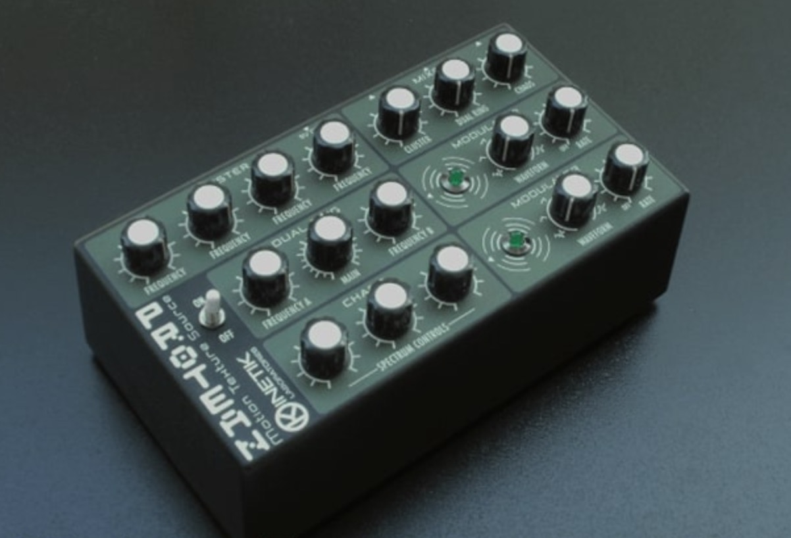

ATtiny-based motion texture source

Protean incorporates 3 independent sound generators for the production of a wide variety of sonic environments with a ever changing expressive vitality. The sound generators have complementary timbral characteristic covering all the frequency spectrum and may also be modulated by the two low frequency oscillators implemented in the circuit, generating hypnotic sounds which evolve over time.
All DB data
- Name: Protean
- Author: Kinetik Labs
- Link: https://github.com/pangrus/Protean/tree/master
- Demo: https://www.youtube.com/watch?v=irRmHTh5Q7I
- Picture: ../pics/protean.jpg
- Description: ATtiny-based motion texture source
- Notes: **Protean incorporates 3 independent sound generators for the production of a wide variety of sonic environments with a ever changing expressive vitality. The sound generators have complementary timbral characteristic covering all the frequency spectrum and may also be modulated by the two low frequency oscillators implemented in the circuit, generating hypnotic sounds which evolve over time. **
- Artifacts: {“Schematic”=>true}{“PCB”=>false}{“BOM”=>true}{“FW”=>true}{“Docs”=>false}{“Enclosure”=>false}
- Tags: DigitalMonophonicAVR
- Level: Advanced
{kind=link}